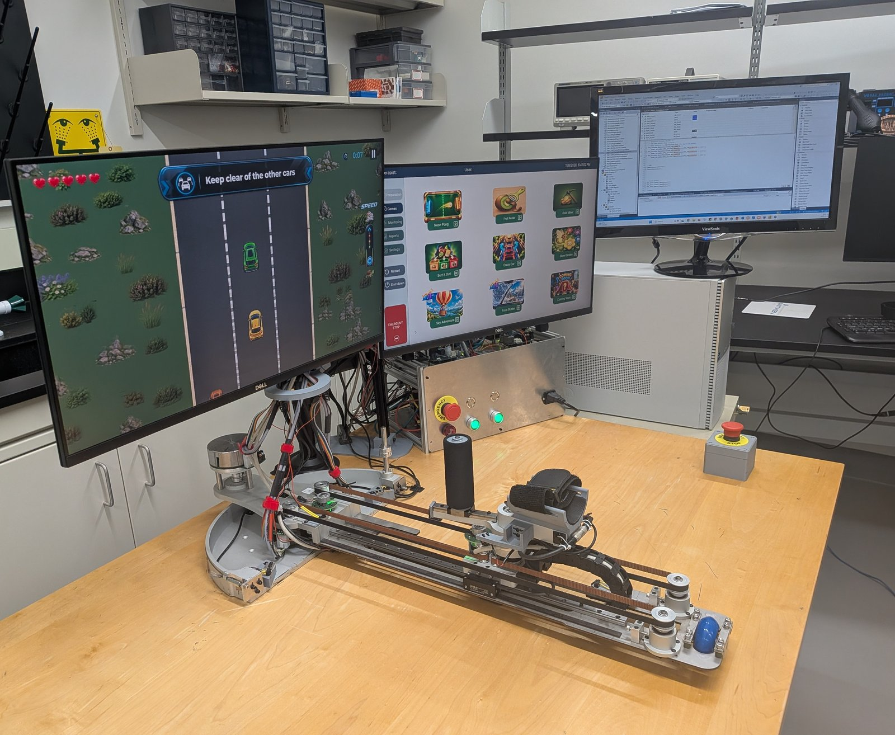
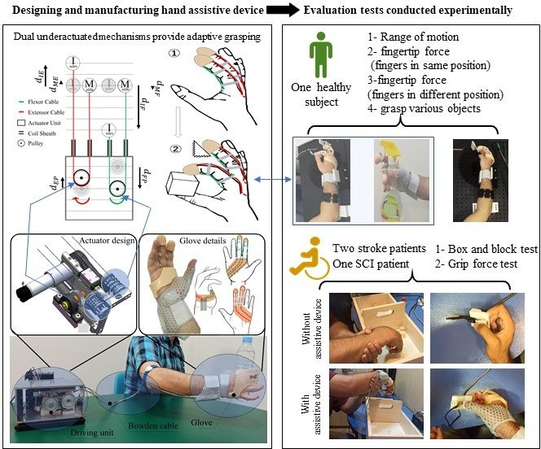
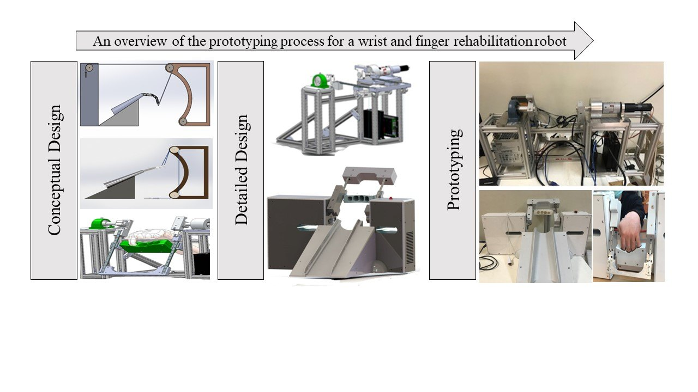
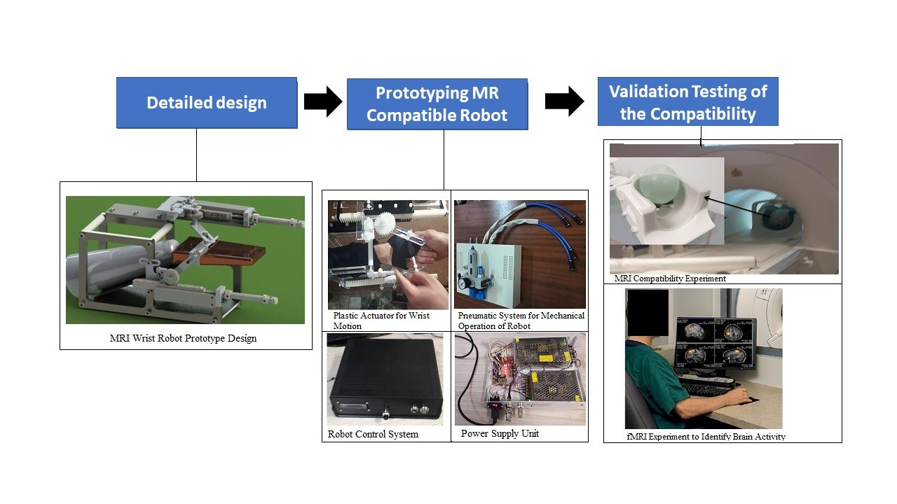
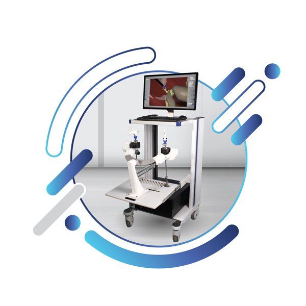
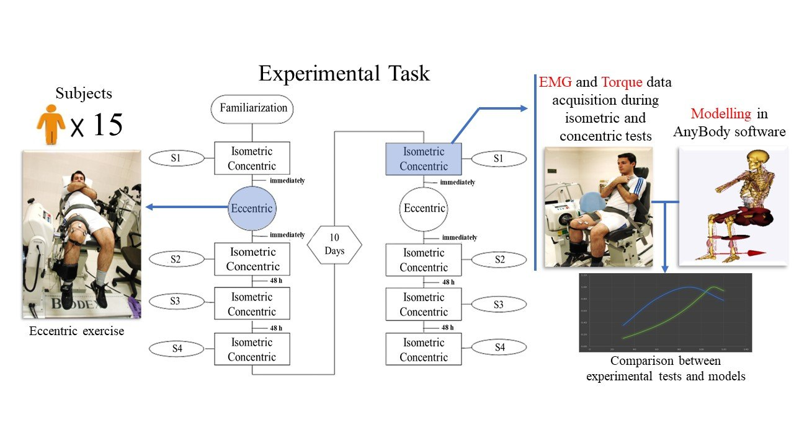
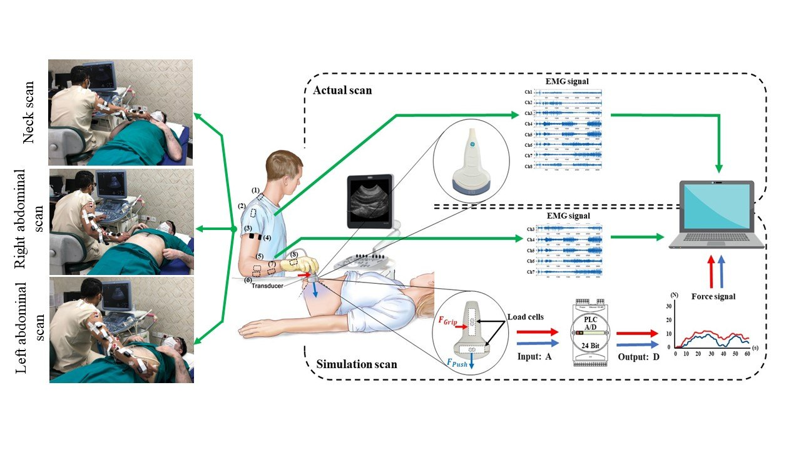

2026
U.S. patent application published
A Wearable Assistive Robot was published as U.S. Patent Application US20260109022A1, based on my PhD work on a wearable hand-assistive robot.
Robotics Engineering · Mechanical Design · Low-Level Control · System Integration
Robotics engineer with 8+ years of research and industry experience developing custom robotic systems from concept to functional hardware: mechanical design and fabrication, electromechanical integration, real-time low-level control in Beckhoff TwinCAT 3 over EtherCAT, and layered safety verification.
News
Highlights from recent research, intellectual property, and training activities.
2026
A Wearable Assistive Robot was published as U.S. Patent Application US20260109022A1, based on my PhD work on a wearable hand-assistive robot.
2026
Selected as a participant in the Lab2Market Health: Validate program, covering customer discovery and commercialization training for rehabilitation technologies.
2026
A Comprehensive Review of End-Effector Rehabilitation Robots with a Focus on the Shoulder and Elbow Joints is under review at Robotics and Autonomous Systems.
2025
Presented the poster A Review of End-Effector Rehabilitation Robots for Shoulder and Elbow Joints.
About
Hands-on engineering of complete electromechanical prototypes: mechanism design, fabrication, wiring, control software and verification.
I am a robotics engineer and Postdoctoral Fellow in Robotics R&D at the University of Alberta, Edmonton. My work covers the full development cycle of custom robotic systems: defining requirements, designing mechanisms and transmissions in SolidWorks, sizing and selecting motors, drives, encoders and sensors, fabricating and assembling prototypes, wiring the electrical system, and bringing the robot up under real-time control.
On the control side, I develop multi-axis motion control in Beckhoff TwinCAT 3 over EtherCAT, with cascaded control between Maxon EPOS4 drives and outer-loop PID controllers in TwinCAT, impedance and admittance control, kinematics and trajectory planning, and model-based feedforward from a Pinocchio dynamics model with friction modeling.
Most of my projects are in rehabilitation and medical robotics, including a 3-DOF upper-limb rehabilitation robot, a wearable cable-driven hand orthosis, an fMRI-compatible wrist robot, and the mechanical design of a laparoscopic surgery simulator. I care about hardware that is safe, testable and manufacturable: clear engineering calculations, documented drawings, layered hardware and software safety, and structured bench verification before any user testing.
Education
Training in medical robotics, mechanical engineering and biomechanics.
PhD, Medical Robotics
2022
Thesis: Design, prototyping and clinical evaluation of an active assistive robotic orthosis for hemiplegic patients’ hand.
MSc, Mechanical Engineering (Biomechanics)
2014
Thesis: The effect of eccentric exercise on isometric contraction of knee extensor muscles.
BSc, Biomedical Engineering (Biomechanics)
2011
Experience
Research and industry roles focused on designing, building and integrating electromechanical systems.
Postdoctoral Fellow – Robotics R&D
November 2024 – Present · Edmonton, Alberta
Mechanical Designer
April 2023 – September 2024 · Tehran, Iran
Mechanical Engineer
January 2019 – December 2020 · Tehran, Iran
Projects
Robotic and electromechanical systems I designed, built or integrated, followed by biomechanics and ergonomics research.

Affiliation: University of Alberta, Canada
Independently designed and built: capstan and differential timing-belt mechanisms, Maxon EPOS4 drives over EtherCAT, cascaded PID, impedance and admittance control, Pinocchio-based feedforward via ADS, and layered safety.

Affiliation: Tehran University of Medical Sciences, Iran (PhD thesis)
A cable-driven, underactuated hand orthosis with a 90 g wearable part, a validated Bowden-cable friction model for fingertip-force estimation (16.5% mean error), Maxon-driven C++/MFC control and clinical testing, developed entirely by me.
Read project →
Affiliation: Tehran University of Medical Sciences, Iran
A 4-DOF electromechanical wrist–finger rehabilitation device developed from clinical observation and tested with post-stroke patients. I was responsible for fabrication and assembly of the robot.
Read project →
Affiliation: Research collaboration, Tehran University of Medical Sciences, Iran
A 2-DOF pneumatically actuated wrist robot built entirely from non-metallic parts for use inside the MRI room. I designed, manufactured and assembled the robot.
Read project →
Affiliation: Sina Robotics and Medical Innovators, Iran
A training simulator combining computer hardware, a mechanical user interface and software modules. I designed and fabricated its mechanical structure and mechanisms.
Read project →
Affiliation: Noavaran Sanat Rabin (NSR), Iran
Designed, fabricated and assembled the mechanical system of a cell-culture incubator with real-time image monitoring, including material and component selection and production planning.
Read project →
Affiliation: Sahand University of Technology, Iran (MSc thesis)
Experimental study with 15 volunteers using an isokinetic dynamometer, EMG and torque measurement, and musculoskeletal modelling. Data acquisition, analysis and modelling were done by me.
Read project →
Affiliation: MSc project in ergonomics (co-supervision)
Assessment of work postures, muscle activity and grip/push forces during sonography. I managed the project and mentored the MSc student from the first step.
Read project →
Affiliation: MSc project in ergonomics (co-supervision)
38 linear, angular and circumference dimensions measured from 210 CT scans to support ergonomic design of ear-related products. I managed the project and mentored the MSc student.
Read project →Documents
Two versions: a one-page resume for quick review, and a detailed CV with full projects, publications, patents and teaching.
A concise one-page resume focused on mechanical design, motion control, electrical integration and safety for industry robotics roles.
Download Resume (1 page)A detailed CV including professional experience, engineering projects, patents, peer-reviewed publications, teaching and awards.
Download Detailed CV (3 pages)Publications
Click each heading to expand.
Full and up-to-date list of publications.
Awards & Recognition
Selected recognitions related to my engineering education and research.
2026 · Customer discovery and commercialization training for rehabilitation technologies.
2023
2015
2014 · Sahand University of Technology.
Teaching & Mentorship
University teaching in biomechanics, ergonomics and mechanics, and mentorship of undergraduate and graduate students.
Shahid Sadoughi University of Medical Sciences (during PhD)
Occupational Biomechanics (5 semesters), Ergonomics in Design (4), Anthropometry (1) and Solid Mechanics (1).
Robot Kinematics and Dynamics, Tehran University of Medical Sciences (2016).
Statics, Sahand University of Technology (2013).
Undergraduate and visiting-student mentorship at the University of Alberta (2025–2026).
Co-supervision of MSc projects in ergonomics and anthropometry that resulted in peer-reviewed publications.
Skills
Tools and methods I use in day-to-day engineering work.
Contact
For robotics engineering roles, collaborations or technical discussions, feel free to reach out.
Email: hkhabiri@ualberta.ca
Location: Edmonton, Alberta, Canada